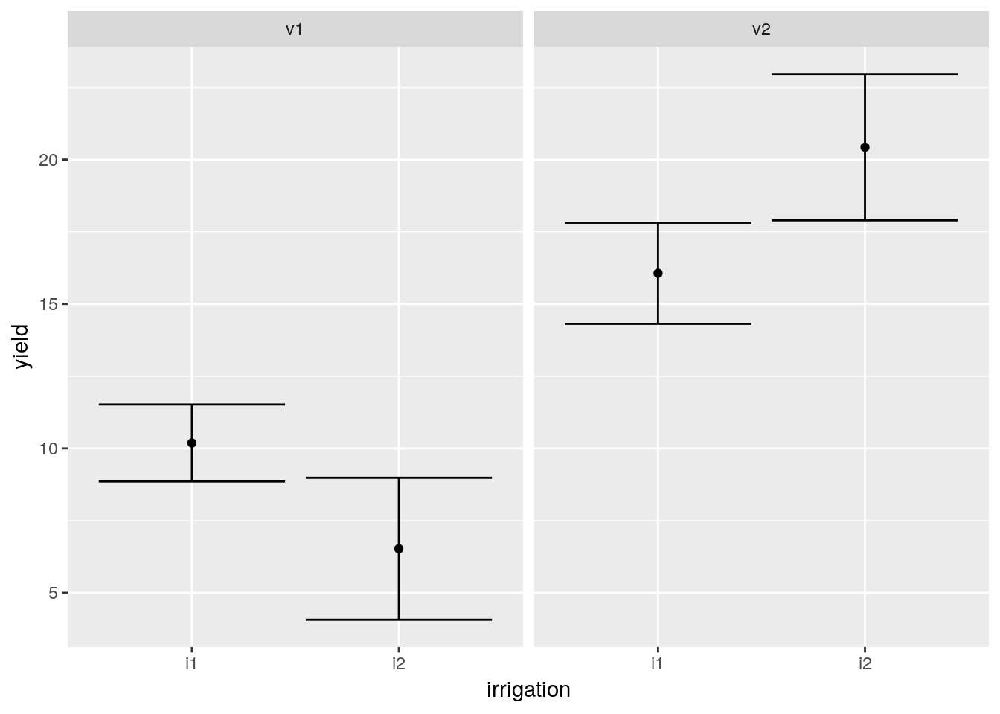
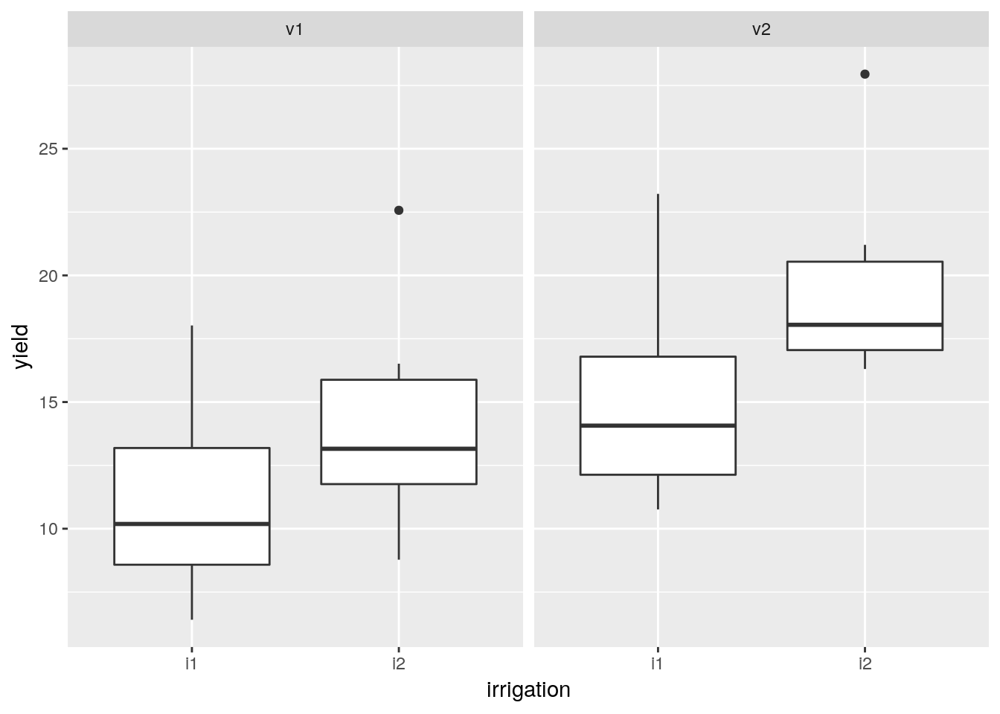
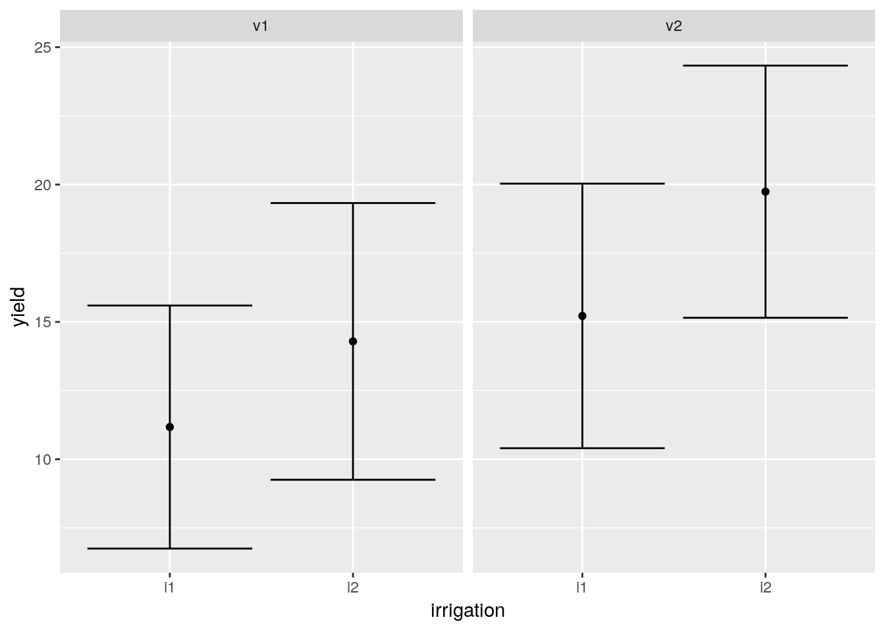
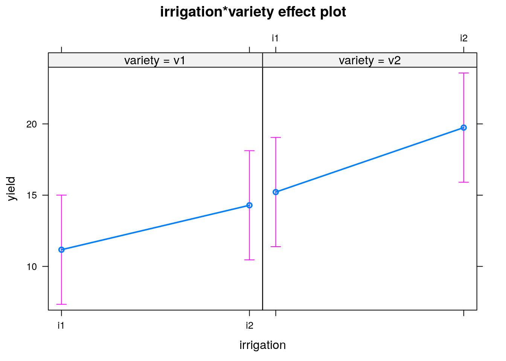
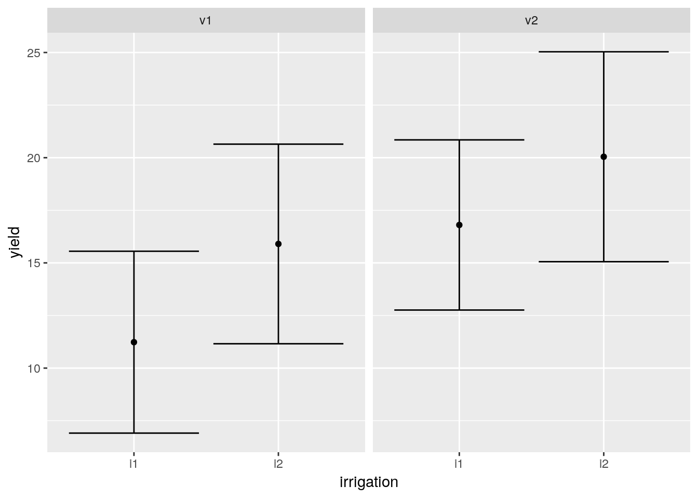

Chapter 16 Factorial designs
Factorial designs refer to situations in which more than one factor is of interest. There are various reasons to use more than one factor in an experiment. In some cases it may save time and money to measure the effects of two factors simultaneously. This makes sense if the factors are additive, with no interactions. In other situations we may actually be interested in looking for interactions between two factors. Altering the level of one factor may alter the effect of another.
Let’s look at an example. An experimenter was interested in the effect of irrigation on the yield of two varieties of wheat. The design involved assigning variety and irrigation treatment at random to 24 plots in order to have 6 replicates of each combination of treatment levels (v1:i1,v1:i2,v2:i1 and v2:i2)

For the moment let’s ignore the possibilities of setting up the experiment within blocks and assume that the experimental units are uniform prior to treatment and are independent of each other.
d<-read.csv("https://tinyurl.com/aqm-data/factorial.csv")We can look at the results as box plots by conditioning on one of the factors using facet wrapping.
g0<-ggplot(d,aes(x=irrigation,y=yield))
g0+geom_boxplot()+facet_wrap(~variety)
We can also look at confidence intervals.
g1<-g0+stat_summary(fun.data=mean_cl_normal,geom="point")
g1<-g1+stat_summary(fun.data=mean_cl_normal,geom="errorbar",colour="black")
g1+facet_wrap(~variety)
16.1 Model fitting
There are no random effects in this design, so a simple linear model can be used. Typing an asterix (*) in the model formula fits a model with main effects and an interaction.
mod<-lm(yield~irrigation*variety,data=d)
anova(mod)## Analysis of Variance Table
##
## Response: yield
## Df Sum Sq Mean Sq F value Pr(>F)
## irrigation 1 113.600 113.600 28.9293 2.897e-05 ***
## variety 1 208.128 208.128 53.0020 4.845e-07 ***
## irrigation:variety 1 0.001 0.001 0.0003 0.9854
## Residuals 20 78.536 3.927
## ---
## Signif. codes: 0 '***' 0.001 '**' 0.01 '*' 0.05 '.' 0.1 ' ' 1summary(mod)##
## Call:
## lm(formula = yield ~ irrigation * variety, data = d)
##
## Residuals:
## Min 1Q Median 3Q Max
## -4.4064 -0.9752 0.4121 1.0838 2.7629
##
## Coefficients:
## Estimate Std. Error t value Pr(>|t|)
## (Intercept) 10.18679 0.80899 12.592 5.78e-11 ***
## irrigationi2 4.33623 1.14409 3.790 0.00115 **
## varietyv2 5.87464 1.14409 5.135 5.05e-05 ***
## irrigationi2:varietyv2 0.03003 1.61798 0.019 0.98538
## ---
## Signif. codes: 0 '***' 0.001 '**' 0.01 '*' 0.05 '.' 0.1 ' ' 1
##
## Residual standard error: 1.982 on 20 degrees of freedom
## Multiple R-squared: 0.8038, Adjusted R-squared: 0.7744
## F-statistic: 27.31 on 3 and 20 DF, p-value: 2.836e-07You should be able to see that the interaction term in this case is not significant. The effects package allows us to look at the pattern of effects visually.
e <- Effect(c("irrigation","variety"), mod)
plot(e)
You can see that the lines between the two levels of the factors follow the same slope but are moved up. This is indicative of additive effects. We could therefore fit a simpler model
mod<-lm(yield~irrigation+variety,data=d)
anova(mod)## Analysis of Variance Table
##
## Response: yield
## Df Sum Sq Mean Sq F value Pr(>F)
## irrigation 1 113.600 113.60 30.375 1.811e-05 ***
## variety 1 208.128 208.13 55.651 2.478e-07 ***
## Residuals 21 78.537 3.74
## ---
## Signif. codes: 0 '***' 0.001 '**' 0.01 '*' 0.05 '.' 0.1 ' ' 1summary(mod)##
## Call:
## lm(formula = yield ~ irrigation + variety, data = d)
##
## Residuals:
## Min 1Q Median 3Q Max
## -4.3989 -0.9827 0.4196 1.0876 2.7704
##
## Coefficients:
## Estimate Std. Error t value Pr(>|t|)
## (Intercept) 10.1793 0.6837 14.888 1.24e-12 ***
## irrigationi2 4.3512 0.7895 5.511 1.81e-05 ***
## varietyv2 5.8897 0.7895 7.460 2.48e-07 ***
## ---
## Signif. codes: 0 '***' 0.001 '**' 0.01 '*' 0.05 '.' 0.1 ' ' 1
##
## Residual standard error: 1.934 on 21 degrees of freedom
## Multiple R-squared: 0.8038, Adjusted R-squared: 0.7851
## F-statistic: 43.01 on 2 and 21 DF, p-value: 3.747e-0816.2 Experiment with interactions
Let’s look at data from the same experimental set up, but in this case there is an interaction.
d<-read.csv("https://tinyurl.com/aqm-data/factorial2.csv")
head(d)## variety irrigation yield
## 1 v1 i1 8.747092
## 2 v1 i2 7.367287
## 3 v2 i1 13.328743
## 4 v2 i2 23.190562
## 5 v1 i1 10.659016
## 6 v1 i2 5.359063The pattern is apparent in the box plots.
g0<-ggplot(d,aes(x=irrigation,y=yield))
g0+geom_boxplot()+facet_wrap(~variety)
g1<-g0+stat_summary(fun.data=mean_cl_normal,geom="point")
g1<-g1+stat_summary(fun.data=mean_cl_normal,geom="errorbar",colour="black")
g1+facet_wrap(~variety)
Now if we fit a model we will find a very significant interaction.
mod<-lm(yield~irrigation*variety,data=d)
anova(mod)## Analysis of Variance Table
##
## Response: yield
## Df Sum Sq Mean Sq F value Pr(>F)
## irrigation 1 0.74 0.74 0.1885 0.6688
## variety 1 586.83 586.83 149.4427 9.789e-11 ***
## irrigation:variety 1 96.72 96.72 24.6313 7.484e-05 ***
## Residuals 20 78.54 3.93
## ---
## Signif. codes: 0 '***' 0.001 '**' 0.01 '*' 0.05 '.' 0.1 ' ' 1summary(mod)##
## Call:
## lm(formula = yield ~ irrigation * variety, data = d)
##
## Residuals:
## Min 1Q Median 3Q Max
## -4.4064 -0.9752 0.4121 1.0838 2.7629
##
## Coefficients:
## Estimate Std. Error t value Pr(>|t|)
## (Intercept) 10.187 0.809 12.592 5.78e-11 ***
## irrigationi2 -3.664 1.144 -3.202 0.00447 **
## varietyv2 5.875 1.144 5.135 5.05e-05 ***
## irrigationi2:varietyv2 8.030 1.618 4.963 7.48e-05 ***
## ---
## Signif. codes: 0 '***' 0.001 '**' 0.01 '*' 0.05 '.' 0.1 ' ' 1
##
## Residual standard error: 1.982 on 20 degrees of freedom
## Multiple R-squared: 0.897, Adjusted R-squared: 0.8816
## F-statistic: 58.09 on 3 and 20 DF, p-value: 4.713e-10The first variety does not respond positively to irrigation. In fact yield may be reduced through over watering. In this case the effects are not additive. They are conditional on the level of one of the factors. In this situation the main effects of irrigation or variety can be difficult to interpret as they represent the average effect taken over both levels of the other factor.
e <- Effect(c("irrigation","variety"), mod)
plot(e)
Interactions are very common in many ecological situations. Although some textbooks on experimental design treat interactive effects as undesirable, finding interactions is an interesting result. In this case the discussion of the results could concentrate on finding an explanation for the difference in response between the two varieties.
16.3 Full factorial with blocking
The previous example treated each experimental unit as independent. In many situations there is some spatial dependence between experimental units.

alt text
d<-read.csv("https://tinyurl.com/aqm-data/factorial_block.csv")
head(d)## variety field field_effect irrigation yield
## 1 v1 field_1 -2.5058152 i1 8.469043
## 2 v1 field_1 -2.5058152 i2 13.970834
## 3 v2 field_1 -2.5058152 i1 13.645747
## 4 v2 field_1 -2.5058152 i2 16.883408
## 5 v1 field_2 0.7345733 i1 13.758136
## 6 v1 field_2 0.7345733 i2 16.514260Once again, the potential advantage of taking into account blocking is to increase the power of the analysis. If the intrinsic variability between blocks is contributing to the variability in the response of the experimental units then accounting for it in the statistical model will increase power.
This can be seen in this example by first plotting the raw data.
g0<-ggplot(d,aes(x=irrigation,y=yield))
g0+geom_boxplot()+facet_wrap(~variety)
g1<-g0+stat_summary(fun.data=mean_cl_normal,geom="point")
g1<-g1+stat_summary(fun.data=mean_cl_normal,geom="errorbar",colour="black")
g1+facet_wrap(~variety)
16.3.1 Model not taking into account blocks
If we don’t take into account the variability attributable to the blocks in the model we lose statistical power.
mod<-lm(yield~variety*irrigation,data=d)
anova(mod)## Analysis of Variance Table
##
## Response: yield
## Df Sum Sq Mean Sq F value Pr(>F)
## variety 1 135.24 135.238 6.6790 0.01772 *
## irrigation 1 87.57 87.567 4.3246 0.05064 .
## variety:irrigation 1 2.96 2.962 0.1463 0.70614
## Residuals 20 404.97 20.248
## ---
## Signif. codes: 0 '***' 0.001 '**' 0.01 '*' 0.05 '.' 0.1 ' ' 1Effects plot.
e <- Effect(c("irrigation","variety"), mod)
plot(e)
16.3.2 Model with block as a random effect.
Block can be fitted as a random effect using lmer.
mod<-lmer(yield~variety*irrigation+(1|field),data=d)
summary(mod)## Linear mixed model fit by REML. t-tests use Satterthwaite's method [
## lmerModLmerTest]
## Formula: yield ~ variety * irrigation + (1 | field)
## Data: d
##
## REML criterion at convergence: 103
##
## Scaled residuals:
## Min 1Q Median 3Q Max
## -1.98922 -0.49404 -0.04189 0.55337 1.34688
##
## Random effects:
## Groups Name Variance Std.Dev.
## field (Intercept) 16.991 4.122
## Residual 3.257 1.805
## Number of obs: 24, groups: field, 6
##
## Fixed effects:
## Estimate Std. Error df t value Pr(>|t|)
## (Intercept) 11.172 1.837 6.426 6.082 0.000695 ***
## varietyv2 4.045 1.042 15.000 3.882 0.001474 **
## irrigationi2 3.118 1.042 15.000 2.992 0.009119 **
## varietyv2:irrigationi2 1.405 1.474 15.000 0.954 0.355380
## ---
## Signif. codes: 0 '***' 0.001 '**' 0.01 '*' 0.05 '.' 0.1 ' ' 1
##
## Correlation of Fixed Effects:
## (Intr) vrtyv2 irrgt2
## varietyv2 -0.284
## irrigation2 -0.284 0.500
## vrtyv2:rrg2 0.201 -0.707 -0.707Now notice how the effects plot shows more effects of the treatment.
e <- Effect(c("irrigation","variety"), mod)
plot(e)
16.4 Split plot
In all the previous examples there have been alternatives available to the use of mixed models with random and fixed effects. In the case of situations involving sub sampling the dependence between sub samples can be dealt with by taking means for each experimental unit. In the cases in which variability occurs between blocks it is possible to include blocks in a model as a fixed effect. Repeat measures designs can use differences within subjects as responses. However there are some more complex situations in which the sum of squares attributed to the variability attributed to different treatments should be compared with different error terms. A classic example is the split plot design in agriculture. The split plot design arose simply as a form of reducing the cost and difficulty of setting up field experiments. When treating field plots it can sometimes be much easier to set up some treatments for larger areas than a smaller one. Imagine the case in the yield experiment we have been looking at in which whole fields are planted with single varieties of wheat and each field is split into two forms of irrigation treatment.

In some respects you could argue that not much has changed from the block design. However if each main field has a different response then the error term for variety will have fewer degrees of freedom than that for irrigation as the same variety has been planted in each field which is then “split” into two levels of irrigation. So effectively there is less independent replication of variety than of irrigation.
If this is not taken into account there may be an accusation of “pseudo replication” with respect to the effect of variety as the anlysis would potentially treat all subplots as independent replicates without taking into account the fact that they are nested within field. However this is a problem if there are shared effects at the field level. If it were possible to ensure as much independence between subplots within the same field as between subplots as a whole it wouldn’t matter.
Here is a dataframe with results from the split plot experiment shown above.
d<-read.csv("https://tinyurl.com/aqm-data/split_plot.csv")
str(d)## 'data.frame': 24 obs. of 5 variables:
## $ variety : Factor w/ 2 levels "v1","v2": 1 1 2 2 1 1 2 2 1 1 ...
## $ field : Factor w/ 12 levels "field_1","field_10",..: 1 1 5 5 6 6 7 7 8 8 ...
## $ field_effect: num -2.506 -2.506 0.735 0.735 -3.343 ...
## $ irrigation : Factor w/ 2 levels "i1","i2": 1 2 1 2 1 2 1 2 1 2 ...
## $ yield : num 6.25 8.06 17.98 20.64 6.63 ...16.4.1 Visualising the data
We can look at the data as boxplots.
g0<-ggplot(d,aes(x=irrigation,y=yield))
g0+geom_boxplot()+facet_wrap(~variety)
g1<-g0+stat_summary(fun.data=mean_cl_normal,geom="point")
g1<- g1+stat_summary(fun.data=mean_cl_normal,geom="errorbar",colour="black")
g1+facet_wrap(~variety)
16.4.2 Incorrect model
The naive way of analysing the data would overlook the potential for a field effect.
mod<-lm(yield~variety*irrigation,data=d)
anova(mod)## Analysis of Variance Table
##
## Response: yield
## Df Sum Sq Mean Sq F value Pr(>F)
## variety 1 141.55 141.550 7.5656 0.01233 *
## irrigation 1 93.88 93.875 5.0175 0.03661 *
## variety:irrigation 1 3.06 3.059 0.1635 0.69027
## Residuals 20 374.19 18.710
## ---
## Signif. codes: 0 '***' 0.001 '**' 0.01 '*' 0.05 '.' 0.1 ' ' 116.4.3 Correct model
mod<-lmer(yield~variety*irrigation+(1|field),data=d)
anova(mod)## Type III Analysis of Variance Table with Satterthwaite's method
## Sum Sq Mean Sq NumDF DenDF F value Pr(>F)
## variety 8.503 8.503 1 10 4.0100 0.07308 .
## irrigation 93.875 93.875 1 10 44.2701 5.684e-05 ***
## variety:irrigation 3.059 3.059 1 10 1.4424 0.25743
## ---
## Signif. codes: 0 '***' 0.001 '**' 0.01 '*' 0.05 '.' 0.1 ' ' 1summary(mod)## Linear mixed model fit by REML. t-tests use Satterthwaite's method [
## lmerModLmerTest]
## Formula: yield ~ variety * irrigation + (1 | field)
## Data: d
##
## REML criterion at convergence: 107.1
##
## Scaled residuals:
## Min 1Q Median 3Q Max
## -1.31217 -0.32739 0.08055 0.44805 1.21676
##
## Random effects:
## Groups Name Variance Std.Dev.
## field (Intercept) 16.589 4.073
## Residual 2.121 1.456
## Number of obs: 24, groups: field, 12
##
## Fixed effects:
## Estimate Std. Error df t value Pr(>|t|)
## (Intercept) 11.2319 1.7659 11.1971 6.361 4.95e-05 ***
## varietyv2 5.5711 2.4973 11.1971 2.231 0.047051 *
## irrigationi2 4.6695 0.8407 10.0000 5.554 0.000243 ***
## varietyv2:irrigationi2 -1.4279 1.1890 10.0000 -1.201 0.257430
## ---
## Signif. codes: 0 '***' 0.001 '**' 0.01 '*' 0.05 '.' 0.1 ' ' 1
##
## Correlation of Fixed Effects:
## (Intr) vrtyv2 irrgt2
## varietyv2 -0.707
## irrigation2 -0.238 0.168
## vrtyv2:rrg2 0.168 -0.238 -0.707par(mar=c(4,12,4,2))
plot(glht(mod))
mod<-aov(yield~variety*irrigation+Error(field),data=d)
summary(mod)##
## Error: field
## Df Sum Sq Mean Sq F value Pr(>F)
## variety 1 141.5 141.6 4.01 0.0731 .
## Residuals 10 353.0 35.3
## ---
## Signif. codes: 0 '***' 0.001 '**' 0.01 '*' 0.05 '.' 0.1 ' ' 1
##
## Error: Within
## Df Sum Sq Mean Sq F value Pr(>F)
## irrigation 1 93.88 93.88 44.270 5.68e-05 ***
## variety:irrigation 1 3.06 3.06 1.442 0.257
## Residuals 10 21.21 2.12
## ---
## Signif. codes: 0 '***' 0.001 '**' 0.01 '*' 0.05 '.' 0.1 ' ' 1